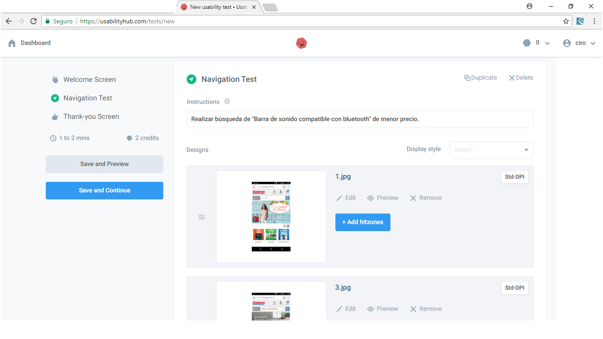
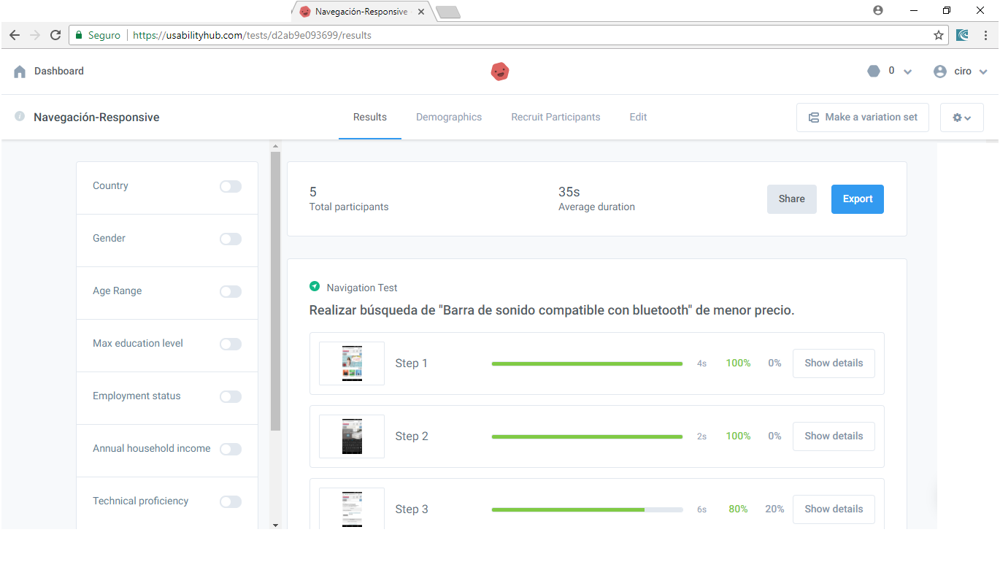

Seguiremos los siguientes pasos:
• Ingresar a la versión móvil responsiva desde un teléfono móvil en http://www.costco.com.mx/
• Tomar las imágenes de un proceso de búsqueda de una Barra de Sonido del menor precio posible compatible con Bluetooth.
• Evalúar las siguientes heurísticas durante el proceso:
o Visibilidad del estado del sistema: evalúa que se muestre en todo momento el resultado de cada tarea que se realiza.
o Utilizar el lenguaje de los usuarios: evalúa si los nombres de los diferentes campos son comprensibles por un usuario típico.
o Consistencia y estándares: evalúa si la herramienta es consistente en todas sus pantallas y listar los elementos que no sean consistentes.
o Minimizar la carga de la memoria del usuario: evalúa la distribución en bloques del contenido. ¿Es fácil para el usuario procesar la cantidad de información entregada?
o Ayuda y documentación: revisar si existe documentación y si ésta es fácil de seguir.
• Crear una prueba de navegación en Usability Hub, sube las imágenes y agrega los puntos de interacción.
• Buscar un número de usuarios a partir del resultado primer punto para que realicen la prueba.
• Medir la efectividad y eficiencia del proceso y genera recomendaciones para cada pantalla.
Solución
Proceso de búsqueda de barra de sonido de bajo precio compatible con bluetooth.
Visibilidad del estado del sistema:
La búsqueda del producto arroja 3272 resultados, por lo que asumimos se puede hacer
filtro por precio y de esa manera obtener el de menor costo, pero lo que se obtiene
es el de menor costo de toda la lista de productos en la web, en ese momento es que nos
damos cuenta que en realidad el filtro no actúa sobre el producto buscado, sino por sobre
todos los productos con los que cuenta Costco. Por lo tanto la herramienta de filtrado es
poco claro con respecto a la tarea que el cliente quiere realizar.
Lenguaje de los usuarios:
El sistema usa lenguaje personal al hacer, por ejemplo, referencia al tratar al cliente de su,
ejemplo, “su búsqueda”; Sin embargo hay frases mal redactadas o redundantes como por ejemplo:
“su búsqueda por Barra de sonido bluetooth su búsqueda ha devuelto 3272 resultados.” Pero en otros
aspectos generales como el menú, y botones o descripciones son bastante claro.
Consistencia y estándares:
Textos, controles y botones en general son consistentes, en cuanto a forma y tipografía.
A pesar de ello con el color de relleno o de las letras no sucede lo mismo. El botón de
búsqueda (Lupa) posee fondo azul claro, consistente con los nombres de los productos en los
resultados de las búsquedas, pero el resto de botones posee un color gris, que cambia de
claro a un tono más oscuro al hacer click, sin embargo el botón de detalles de productos
posee el fondo gris más oscuro sin haberle hecho click. Los botones agregar al carrito y de
ingresar poseen un fondo verde, que no son consistentes con otro color usado en la página,
inclusive el carrito muestra los productos que posee, pero en un fondo de color azul claro,
consistente con los elementos de búsqueda, y no con el botón de agregar con el que debería.
Minimizar la carga de la memoria del usuario:
Los elementos de la aplicación están bien distribuidos, referenciados y titulados,
sin embargo a la hora en que se hace scroll en la lista de productos en el resultado,
se puede volver confuso el bloque de cada producto en particular, ya que no hay, al menos,
línea divisora entre producto y producto, por lo cual, por ejemplo se puede confundir el elemento
“más detalle” si hace referencia al producto anterior, o posterior. Lo mismo sucede con el de añadir.
No sucede lo mismo con la imagen del producto y el nombre a su lado que contiene el precio asignado.
Ayuda y documentación:
Posee en el footer un menú que incluye pasos para realizar la compra, sin embargo esta está
redactada en inglés (suma dificultad); sección de preguntas frecuentes, y de devoluciones,
entre otras, perfectamente redactadas. Captura de ayuda y documentación:
Prueba de navegación (Proceso):


• Solo 2 de 5 participantes en la evaluación completan la tarea, representan un
40% del total.
• El promedio de la evaluación es de 35 segundos, demuestra baja eficiencia.
• Esto puede deberse en parte a la confusión con el botón “Definir por” y por otro al ordenamiento
no claro de la muestra de resultados.
• El filtro no trabaja con los resultados esperados.
• La cantidad de clics y navegación que se tiene que realizar en la búsqueda de manera excesiva.
Pantalla de búsqueda
Al ingresar el nombre del producto en la búsqueda no aparece autocompletar, por lo que esta funcionalidad
puede demorar el tiempo en que el usuario escribe el nombre del mismo,
agregando tiempo, por lo tanto disminuye la eficiencia.
Pantalla de resultados
La redacción en el resultado de la búsqueda es redundante (Confuso).
Resultados de búsqueda, los botones “Definir por” y “Ordenar por: xxx” son confusos,
parece que hacen referencia a similares tareas. Inclusive los colores son similares.
Los bloques de resultados no limitan un producto de otro.
Sin embargo los filtros están limitados por un interlineado.
Pantalla resultado de filtro
Los resultados de la búsqueda deberían limitarse al producto mencionado, o afines.
Esto crea confusión al aplicar el filtro, el cual devuelve la tarea en base a los 3272
productos afectados. Esto disminuye a la eficacia, ya que hay que volver atrás en la pantalla,
y luego hacer scroll viendo los productos para seleccionar el más barato.
Pantalla de búsqueda con scroll
Si la búsqueda fuera de entre varios productos la tarea se volvería tediosa, causaría frustración,
y por supuesto es poco eficaz recorrer una lista de productos que no se pueden filtrar de manera
correcta. Inclusive esta pantalla demuestra poca eficacia, ya que el producto buscado, no especifica
que es compatible con bluetooth, sin embargo así lo es en su descripción (Mas detalle). Esto aumenta
los click, lo que hace disminuir la eficacia, y a su vez lleva a un uso mayor de tiempo en la búsqueda,
lo que conlleva una menor eficiencia.
Pantalla de ayuda de compras
Los bloques presentados están en lengua inglesa, a pesar de que el sitio es español,
para clientes de México, y no guardan consistencia con el resto de la aplicación.
Esto es algo para solucionar.
Algunas observaciones gráficas: